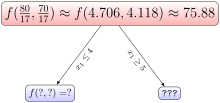
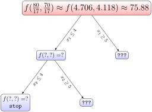
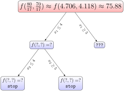
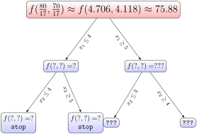
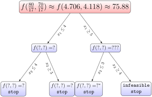
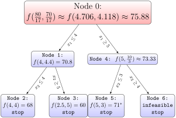

Suppose the witch Agnesi also goes into the business of selling food, meat sandwiches and meat pies. Each day she is able to acquire 50 oz of mystery meat (don’t ask) and 30 oz of flour. The sandwiches take 8 oz of meat and 2 oz of flour, the pies take 3oz of meat and 5 oz of flour. She is able to sell the sandwiches for 10 gold pieces and the pies for 7 gold pieces.
(a)
Agnesi wishes to be able to produce sandwiches and pies in a way to maximize her income. Set up this problem as a linear optimization problem and solve.
(b)
What are some problems with this solution? Without trying to explictly find the optimal solution, how far off is this solution?
(c)
How many sandwiches and pies should she actually sell to maximize her income?
(d)
After the local barber has been arrested, demand for Agnesi’s pies sees an increase, and she is able to now sell them for 12 gold pieces. Now what production level maximizes her income?
Definition8.1.1.
A linear optimization problem where all solutions must be integers is called an integer optimization problem.
If the condition that solutions be integers are relaxed, this is called the relaxation of the integer optimization problem.
Activity8.1.2.
(a)
Come up with three realistic optimization problems who are best modeled by an integer optimization problem. You do not need to work out all the details or solve the problems.
(b)
Consider an integer optimization maximization problem whose relaxation achieves an optimal solution. Which of the following are true about the integer optimization problem?
The integer problem achieves an optimal solution that is equal to the optimal solution of the relaxation.
The integer problem achieves an optimal solution that is less than to the optimal solution of the relaxation.
The integer problem achieves an optimal solution that is greater than to the optimal solution of the relaxation.
The integer problem is infeasible.
The integer problem is unbounded above.
Activity8.1.3.
The branch and bound method is a way to systematically add bounds to a linear optimization problem to ensure the solution is integral.
We examine the integer optimization problem from Exploration 8.1.1, and it’s relaxation.
(a)
Consider \(x_1\) the number of sandwiches sold, the current optimal \(x_1\text{.}\) Which two of the following potential additional constraints would force the value of \(x_1\) to be an integer, while remaining as close to the optimal solution of the relaxation as possible.
\(\displaystyle x_1\leq 3\)
\(\displaystyle x_1\geq 3\)
\(\displaystyle x_1\leq 4\)
\(\displaystyle x_1\geq 4\)
\(\displaystyle x_1\leq 5\)
\(\displaystyle x_1\geq 5\)
\(\displaystyle x_1\leq 6\)
\(\displaystyle x_1\geq 6\)
(b)
Let us consider the additional constraint \(x_1\leq 4\text{.}\) Solve the resulting general linear optimization problem:

(c)
What additional constraints on \(x_2\) would ensure that \(x_2\) would be integral while changing \(x_2\) as little as possible?
(d)
Consider the additional constraint \(x_2\leq 4\text{.}\) Solve this maximization problem. Why do we no longer need to adjust \(x_1\text{?}\) Are we gaurunteed that this solution is optimal?

(e)
We consider the constraint \(x_2\geq 5\) instead. Solve this maximization problem. Even though the solution is not integral, why do we no longer need to pursue the case where \(x_1\leq 4, x_2\geq 5\text{?}\)

(f)
We return to the other possible initial constraint for \(x_1\text{,}\)\(x_1\geq 5\text{.}\) Solve this maximization problem. What are the possible constraints we could now add for \(x_2\text{?}\)

(g)
We consider now the constraint \(x_2\leq 3\text{.}\) Solve this maximazation problem. How does this solution compare to the previous integral solution we found?
(h)
Instead we now consider the constraint \(x_2\geq 4\text{.}\) Solve this maximization problem. Why do we no longer need to consider the case where \(x_2\geq 4\text{?}\)
(i)
How do we know we now have arrived at the optimal solution?

Definition8.1.2.
The branch and bound algorithm for solving an integer optimization maximization problem is as follows:
INITIALIZE: Begin with a canonical maximization integer optimization problem.
Solve the relaxation of the linear optimization problem. If the solution is integral STOP.
For some \(x_i^*\) in the optimal solution found in the previous step, define two sub problems, one with additional constraint \(x_i\leq \lfloor x_i^*\rfloor\) and \(x_i\geq \lceil x_i^*\rceil\)
Pick one of the subproblems and solve the linear relaxation with the additional constraint.
If the solution is integral, RETURN to 4.
If the solution is less than any integral solution found, RETURN to 4.
If the problem is infeasible, RETURN to 4.
Apply 3-7 to the new problem.
If all subproblems are explored, RETURN to 4 for the parent problem.
Once the search tree has been exhausted, identify the optimal integral solution.
Example8.1.3.
The complete search tree for Activity 8.1.3 is as follows

We start at Node 0, and identify the two subproblems. We exlore the subproblem where \(x_1\leq 4\) in Node 1, and again identify two subproblems. We stop and return at Node 2 because the solution was integral. We stop and return from Node 3, even though the solution is not integral, because the optimal solution for that subproblem was already less than the solution found in Node 1, and any further exploration would lead to a lower value still.
We then return to the starting node and to the other initial subproblem in Node 4, were \(x\geq 5\text{.}\) When we split into the the two subproblems, \(x_2\leq 3\) gives an integral solution in Node 5, and the constraint \(x_2\geq 6\) gives an infeasible problem.
Thus, we return, and of the two integral solutions found, \(f(5,3)=71\) has the highest value.
Activity8.1.4.
As the demand for meat pies skyrockets, Agnesi is now able to acquire 40 oz of floor a day, but now uses 10 oz of floor per meat pie to thicken the gravy. She is able to sell these for 40 gp each. Use the branch and bound algorithm Definition 8.1.2 to found her new optimal production level.